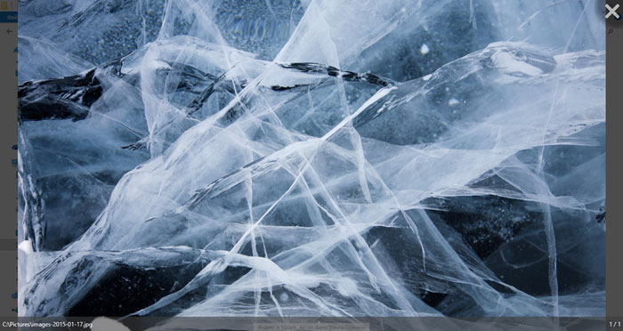

Light Image Viewer is a simple viewer inspired by Google Picasa Image Viewer. But it don't include any other software, any cloud services and automatical background update sevices.
It is lightweight, minimalistic and supports a lot of different formats. It is also opensource, so you can enhance it on your own way, or use it as it is.